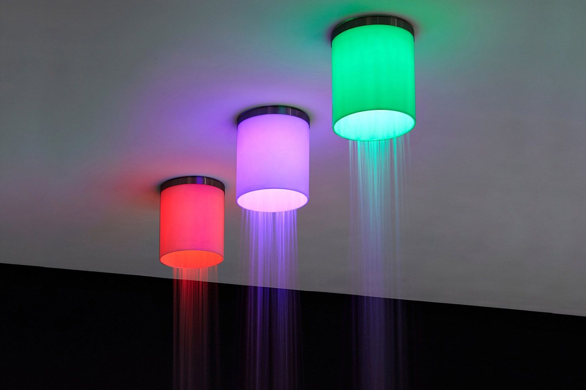

La cromoterapia, anche chiamata terapia dei colori, è una tecnica che utilizza lo spettro di colori visibili per il trattamento di diversi disturbi. Questa terapia ha avuto una scientifica evoluzione nel tempo, la quale ha portato alla luce informazioni specifiche sui suoi effetti benefici e sul legame che i colori hanno con il corpo umano.
La cromoterapia, come precedentemente accennato, ha capacità curative che si basano sui benefici scaturiti dai colori appartenenti allo spettro di luce visibile.
La cromoterapia è un trattamento sicuro ed efficace che può essere effettuato da solo o in combinazione con altre terapie (come fisioterapia e la medicina tradizionale). A volte, questo metodo viene anche utilizzato in parallelo a trattamenti di sauna infrarossa, la quale ha un'azione diretta sui tessuti morbidi del corpo. Alcuni dei vari benefici di questa terapia: è sicura e non dolorosa, ideale quindi per tutti, da bambini a anziani, è rivolta al trattamento dei sintomi di alcune malattie, in linea con una visione orientale, equilibra i chakra del corpo, aiuta nella meditazione e nel rilassamento, elimina i blocchi emozionali. Oltre a questi benefici, la cromoterapia aumenta la consapevolezza di sé e aiuta nel comprendere la necessità di includere determinati colori nella vita di tutti i giorni. Alla base di questa terapia vi è la consapevolezza che la luce, a determinate frequenze d’onda, può influenzare diverse molecole presenti nel nostro organismo.
VIOLA
Viola è il colore della meditazione, al limite dello spettro visivo. Migliora l’ottimismo e aiuta la concentrazione, innalza il livello di energia, stimolando la creatività.
BLU
Il blu è il colore del rilassamento. Favorisce l’introspezione, la quiete e l'armonia. Stimola sistema nervoso parasimpatico. Agisce su ansia, insonnia ed irritabilità. Rende morbida la pelle, riduce le rughe e gli arrossamenti.
TURCHESE
Il turchese è consigliato per chi soffre di stress. Stimola il sistema parasimpatico, diminuendo la pressione arteriosa, la frequenza cardiaca ed il ritmo del respiro. Aumenta l’ossigenazione della pelle.
VERDE
ARANCIO

ROSSO